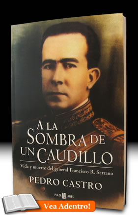

ISBN: 968-5958-08-4
Editorial: Plaza & Janés, 2005, 296 pp.
A la Sombra de un Caudillo:
vida y muerte del general Francisco R. Serrano
Es un estudio biográfico de uno de los actores más destacados de la Revolución Mexicana. Unido militar y políticamente al general Álvaro Obregón desde joven, Serrano es su íntimo colaborador, lugarteniente leal y hombre de sus mayores confianzas, y llega a ocupar la Secretería de Guerra al triunfo del obregonismo. Al término de la administración del general Elías Calles en 1928 es contemplado como posible candidato a sucederlo, pero la decisión del Caudillo de regresar a la Presidencia precipita un violento cambio de planes. Serrano decide entonces contender al puesto con la bandera del antirreeleccionismo, y ante la posibilidad de superar a su rival, en medio de un clima de descontento y de rumores de un levantamiento militar, el gobierno decide eliminarlo junto con trece personas más en la carretera vieja de México a Cuernavaca. El conflicto entre Serrano y Obregón hasta su trágico desenlace inspiró a Martín Luis Guzmán a escribir en España su célebre novela La Sombra del Caudillo, cuyo argumento corre en paralelo imaginario de los hechos reales. A casi un siglo de los acontecimientos de 1927, se emprende su reconstrucción, a partir de fuentes poco conocidas o antes vedadas a los historiadores, y al explicarlos, echa luces sobre una época fundacional del moderno sistema político mexicano.
Réplicas y consultas con el autor: pedrocastro3131@gmail.com
Índice
Prólogo
- De la periferia al centro del poder
- Una experiencia de gobierno nacional
- Serrano contra la rebelión delahuertista
- Serrano en Europa
- De vuelta a la política y los negocios
- La disputa presidencial en ciernes
- Empieza la ruda campaña presidencial
- Aprehensión de Serrano y camino al sacrificio
- La hecatombe de Huitzilac
Epílogo
- El general Eugenio Martínez, de nuevo
- Represión generalizada
- El juicio del siglo
- Polvos de aquellos lodos (La Sombra del Caudillo, la obra y la película)
Reseñas y Comentarios
Francisco Zapata
El Colegio de México.
Erika P. Bucio
Documentan 'A la sombra de un caudillo'. "Relata Pedro Castro un crimen de Estado", Cultura del Reforma, 8 de octubre del 2005-11-12
Comentario Canal 11
Miércoles 5 de octubre del 2005 Publica el historiador Pedro Castro "A la sombra del caudillo"
Álvaro Matute
A la Sombra de Martín Luis Guzmán, Este País: tendencias y opiniones. Diciembre 2005, n. 177, pp. 29-, sobre el libro A la Sombra de un Caudillo: vida y muerte de Francisco R. Serrano.
Ignacio Almada Bay
"¿Cuál Triángulo Sonorense?”, Región y Sociedad, enero-abril, año/vol. XX, número 041, El Colegio de Sonora, Hermosillo.
Noroeste.com
De Serrano, la desmemoria masoquista.
Francisco R. Serrano, Revolución Mexicana, Adolfo de la Huerta, Plutarco Elías Calles, Álvaro Obregón, Jorge Prieto Laurens, Eugenio Martínez, Plan de Agua Prieta, Rebelión Delahuertista, Francisco Villa, Partido Cooperatista Nacional, Martín Luis Guzmán, Matanza de Huitzilac, Elecciones presidenciales de 1928, Claudio Fox